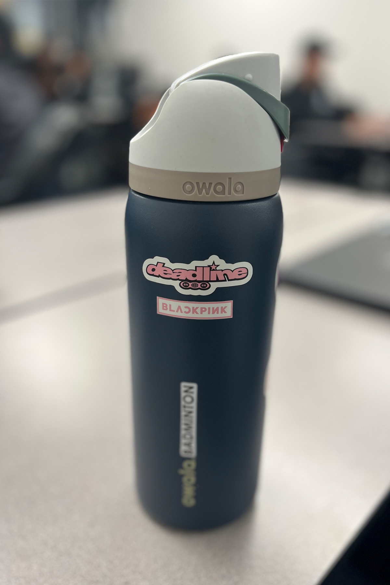

Thumbler
Smart Temperature Tumbler
New

Answer 5 quick questions about Thumbler, then see your score and jump to the product page.
You scored 0/0
Thumbler keeps your drink at the perfect temperature for hours, with smart feedback and a premium, minimalist design. Check out the full product page to see colors, capacity, and all the smart features.
Tip: Your score is just for fun — but your hydration can be seriously upgraded. 💧